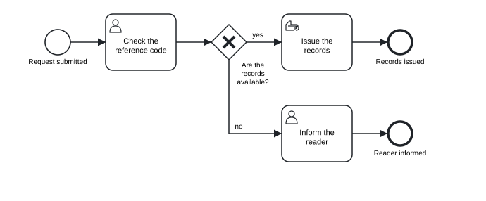

Chapter 2 Getting started
In this chapter you will install the tok command on Windows, macOS or Linux · learn the other ways to reach the engine: R, Julia, VS Code, the browser playground and the bundle for AI agents · write your first model and take it through tok check, tok fmt, tok bpmn and tok svg · open the result in Camunda Modeler or bpmn.io · set up your editor for tok files
2.1 Ways to use tok
All the tools of tok run the same engine, so you may start with whichever suits you and add others later. A model written in the browser gives the same diagnostics and the same BPMN file as the same model checked on the command line or in R.
| Way | What you get | Install |
|---|---|---|
Python package tok-lang |
the tok command, the Python module tok.api, the MCP server (tok mcp) |
pip install tok-lang |
Rust crate tok-cli |
the tok command alone |
cargo install tok-cli |
R package tokr |
functions for R, diagrams in the viewer, a knitr engine for R Markdown and Quarto | install.packages("tokr") |
Julia package Tok |
the engine in Julia, a native simulator, calibration on event logs | Pkg.add(["Tok", "tok_jll"]) |
| VS Code extension tok | highlighting, live diagnostics, formatting, a diagram beside the editor, export | from the Visual Studio Marketplace or Open VSX |
| Playground | the engine in a web page: editor, diagnostics, diagram, simulation, downloads | nothing: https://tok-lang-bpm.github.io/playground/ |
| Agent bundle | the skills that teach an agent to model in tok and in BPMN XML, with the MCP server | see Chapter 14 |
For this book you need the tok command. The rest of this section shows how to install it; the other ways are described afterwards.
2.2 Installing the command line
2.2.1 With Python
The simplest way to get tok on any common system is the Python package tok-lang. It needs Python 3.8 or newer. The packages on PyPI (called wheels) contain the compiled Rust engine for Windows x64, Linux x86_64 and aarch64, and macOS on Intel and Apple silicon, so installing them needs nothing else.
On Windows, open PowerShell or the Command Prompt and run:
py -m pip install tok-langOn macOS and Linux, open a terminal and run:
python3 -m pip install tok-langIf pip is on your path, pip install tok-lang does the same on every system. To upgrade later, add --upgrade. If you prefer to keep command-line tools apart from your Python projects, pipx install tok-lang installs the command in an environment of its own.
Then check that the command works:
tok --version
tok 1.0.3If the system answers that it does not know the command tok, the folder where pip puts commands is not on your path. You can always run the same program through Python instead: py -m tok --version on Windows, python3 -m tok --version elsewhere. Every command in this book works in that form.
On a platform without a ready wheel, pip builds the engine from the source archive. That needs the Rust toolchain, version 1.99 or newer, from https://www.rust-lang.org/tools/install. The build takes a few minutes; the result is the same program.
The Python package also carries the MCP server, the program through which AI agents call the engine: tok mcp starts it. You do not need it now; Chapter 14 explains when and how to use it.
2.2.2 With Cargo
If you work with Rust, or want the command without Python, install it from crates.io:
cargo install tok-cliThis compiles the program tok (Rust 1.99 or newer) and puts it in Cargo’s folder of commands, which the Rust installer adds to your path. The language server and the MCP server are separate programs from the same source: cargo install tok-lsp tok-mcp. Chapters 12 and 14 describe them.
2.2.3 Checking the installation
Three commands confirm that everything is in place:
tok --version # prints the version: tok 1.0.3
tok --help # lists the commands
tok cheatsheet # prints the whole language on one pageEvery command has its own help: tok check --help, tok bpmn --help and so on. The command reference in the appendix lists all of them with their options.
2.3 Other ways to reach the engine
2.3.1 R
The R package tokr gives the engine to R: diagnostics as data frames, diagrams in the RStudio viewer, simulation results as tables, and a knitr engine that draws tok models in R Markdown and Quarto documents. Install it from CRAN:
or from R-universe, where new releases appear first:
install.packages("tokr", repos = c("https://tok-lang-bpm.r-universe.dev", "https://cloud.r-project.org"))When R installs a binary package for your system, nothing else is needed. When it builds the package from source, as on Linux, it compiles the engine, which requires Rust 1.99 or newer and, on Windows, Rtools for your version of R. A first test:
2.3.2 Julia
The Julia package Tok (Julia 1.10 or newer) gives the whole engine to Julia and adds a native simulator for large experiments and the calibration of simulation parameters on event logs:
using Pkg
Pkg.add(["Tok", "tok_jll"]) # tok_jll is the engine library, built for every platform
using Tok
Tok.Engine.available() # true when the engine library was found
Tok.Engine.check(read("model.tok", String)) # the diagnosticsChapter 13 describes the Python, R, Julia and C interfaces in detail, including where the Julia package looks for the engine library.
2.3.3 Visual Studio Code
The extension tok for Visual Studio Code, published by tok-lang-bpm, turns the editor into a modelling environment. Open the Extensions view, search for tok, and install the extension from that publisher. It is published both on the Visual Studio Marketplace and on Open VSX, the registry used by VSCodium and other editors built on the same code. The packages for Windows, Linux and macOS carry the language server, so no other installation is needed.
With the extension, the editor colours keywords, identifiers, labels and attributes; shows the diagnostics of tok check as you type; formats the document to the canonical form; jumps from an identifier to its declaration; and opens the diagram beside the text (tok: Show diagram), redrawing it as you edit. tok: Export BPMN writes the BPMN file next to the model. Chapter 12 covers the extension and other editors.
2.3.4 The playground
The playground at https://tok-lang-bpm.github.io/playground/ is the engine compiled to WebAssembly and running in your browser. You type a model on the left; the diagnostics, the diagram, the BPMN file in the bpmn-js viewer, the simulation and the decisions appear in tabs. Every file tok export would write can be downloaded. Nothing is sent to a server: the page computes everything locally.
The playground is the quickest way to try tok, to show a model to someone who has nothing installed, or to share a model as a link (Copy link puts the whole text into the address).
2.3.5 The agent bundle
If you work with an AI agent, the bundle at https://github.com/tok-lang-bpm/tok-agent contains the skill that teaches an agent the workflow of modelling in tok, together with the configuration of the MCP server. Chapter 14 explains how to give it to an agent and how to check the agent’s work.
2.4 Your first model
This section takes you through the whole cycle of work with tok on one small model: write, check, format, export, look at the result. The process is a request to see records in the reading room of an archive. A reader submits a request; the archivist checks the reference code; if the records are available, they are issued at the desk, otherwise the reader is informed.
2.4.1 Step 1: write the text
Create a folder for your models, open your editor, and save a new file as reading-room.tok. Type the model below. You do not need to copy the spacing exactly; the next steps will tidy it up.
# Access to records in an archive reading room
tok 1.0 "Reading room request"
start submitted "Request submitted"
# the archivist checks the reference code first
user check "Check the reference code"
xor available "Are the records available?"
manual issue "Issue the records" # at the reading room desk
user inform "Inform the reader"
end issued "Records issued"
end informed "Reader informed"
flow submitted -> check
flow check -> available
flow available -> issue "yes"
flow available -> inform "no"
flow issue -> issued
flow inform -> informedLook at what each line does. The first line is a comment: everything after # is a note for people, which the tools ignore. The second line is the header, which every document must start with: tok, the version of the language (1.0) and the title of the model. Then come the elements, one per line: a start event, a user task (the archivist works in the archive’s system), an exclusive gateway with a question, a manual task (handing over records needs no system), another user task and two end events. The flow lines connect them by their identifiers; a label after the arrow names a branch of the gateway.
2.4.2 Step 2: check the model
In a terminal, go to the folder of the model and run:
tok check reading-room.tok
reading-room.tok: 0 error(s), 0 warning(s), 0 note(s)No errors, no warnings, no notes: the model is valid BPMN. When the model has problems, tok check lists them, one per line, before the summary. Here is what it prints for a version of the model with two mistakes, a duplicated identifier and a misspelled one (the file 02-reading-room-error.tok among the examples):
tok check 02-reading-room-error.tok
02-reading-room-error.tok:9: error R001: identifier 'issued' is already used on line 8
02-reading-room-error.tok: 1 error(s), 0 warning(s), 0 note(s)Each diagnostic has the same parts: the file, the line number, the severity, a code and a message. The line number tells you where to look. The severity is one of three:
| Severity | Meaning | Effect |
|---|---|---|
| error | the document is not a valid model | the exports refuse to run until it is fixed |
| warning | the model is valid but probably not what you meant | the exports run; read the warning and decide |
| note | a matter of style, such as a gateway whose label is not a question | the exports run |
The code is stable across versions and languages, so you can look it up in the diagnostics appendix. R001 belongs to the group of reference errors: two elements declared with the same identifier.
Notice that only one error is reported, although the file has two mistakes. The checker works in stages: first the lines and statements, then the identifiers and references, then the rules of BPMN. A later stage runs only when the earlier ones found no errors, because an error in the structure would make its results misleading. After you rename the second end event to informed, the next stage reports the misspelled identifier in a flow:
02-reading-room-error.tok:14: error R002: unknown flow node 'isued'Fix the errors from the top, run tok check again, and repeat until the summary shows zero errors.
tok check --lang pl prints the messages in Polish; the codes stay the same. For programs and scripts, tok check --json prints the diagnostics as JSON. Every command ends with exit code 0 on success, 1 when the document has errors and 2 when the command line itself is wrong, so tok check can stop a build or a continuous-integration job.
2.4.3 Step 3: format the text
The text you typed works, but its spacing is irregular and the flows take six lines. Run:
tok fmt reading-room.tokThe command prints the canonical form of the model. When you are happy with it, write it back into the file:
tok fmt reading-room.tok -wThe file now reads:
# Access to records in an archive reading room
tok 1.0 "Reading room request"
start submitted "Request submitted"
# the archivist checks the reference code first
user check "Check the reference code"
xor available "Are the records available?"
manual issue "Issue the records" # at the reading room desk
user inform "Inform the reader"
end issued "Records issued"
end informed "Reader informed"
flow submitted -> check -> available
flow available -> issue "yes"
flow available -> inform "no"
flow issue -> issued
flow inform -> informedtok fmt changed the spacing, added a blank line between the elements and the flows, joined the first two flows into a chain (submitted -> check -> available, because they form one path without labels), and kept both comments: the comment above a statement stays above it, the comment at the end of a line stays at the end of that line. It never changes what the model means. tok fmt --check only reports whether a file is already in canonical form, which is useful in scripts.
Formatting is optional, but it is a good habit. When every model in a repository is in canonical form, the difference between two versions shows only real changes.
2.4.4 Step 4: export BPMN
Now produce the BPMN file:
tok bpmn reading-room.tok
BPMN: reading-room.bpmnThe file reading-room.bpmn is BPMN 2.0 XML with the diagram layout computed by tok. By default it gets the name of the model with the extension .bpmn; -o chooses another file name (tok bpmn reading-room.tok -o request.bpmn), in an existing folder.
2.4.5 Step 5: draw the picture
tok svg reading-room.tok
SVG: reading-room.svgThe SVG picture opens in any web browser and can be inserted in documents and web pages. It is the same drawing as in the BPMN file:

Figure 2.1: The reading room request, drawn by tok svg.
2.4.6 Step 6: open the model in a BPMN tool
The BPMN file is the bridge to every other BPMN tool. Two are worth trying at once:
- Camunda Modeler, the desktop editor from https://camunda.com/download/modeler/: choose File › Open File… and select
reading-room.bpmn. The diagram appears as tok laid it out. Click an element and the properties panel shows its type and name; the identifiers are those of your text. - bpmn.io, the web modeller at https://demo.bpmn.io/: drag the file from your folder onto the page.
Both tools let you move shapes and edit the model. Remember the principle of Chapter 1: the text is the model. If you change the process in a graphical editor, bring the change back with tok import (Chapter 8); otherwise the next tok bpmn overwrites the file with the text’s version.
2.4.7 Step 7: change and repeat
Real work is a loop: change the text, check, format, export. Try it once now. Add a user task “Register the visit” between “Issue the records” and the end event “Records issued”: one new line among the elements, and the flow issue -> issued replaced by issue -> register -> issued. Choose an identifier that is not taken yet, run tok check, tok fmt -w, tok svg, and look at the new picture. The layout makes room for the new task by itself.
tok export reading-room.tok -o out/ writes the BPMN file and the picture in one step, into the folder out (created when needed), together with any decision and form files the model has. For a descriptive model like this one, tok bpmn and tok svg are all you need.
2.5 Setting up your editor
A tok model is plain text, so any text editor will do. A few settings make the work smoother.
Encoding. Save files as UTF-8, which is the default of every modern editor. Labels may then contain any characters: accents, other alphabets, typographic quotes. A byte order mark at the start of the file is accepted and ignored. Identifiers are restricted to ASCII on purpose, as the next chapter explains; the restriction does not apply to labels and comments.
Indentation with spaces. Blocks (lanes in pools, elements in lanes) are made by indentation, and the indentation must be spaces. A tab character in the indentation is an error:
model.tok:4: error T002: tab character in indentation; use spacesSet your editor to insert spaces when you press the Tab key. In VS Code, the status bar at the bottom right shows Spaces: 2 when this is so; click it to change. Two spaces per level is the canonical form, and tok fmt will convert any consistent indentation to it.
Line endings. Windows, macOS and Linux line endings are all accepted; tok fmt -w writes the file with Unix line endings.
Line numbers. Keep them visible. Every diagnostic names a line, and every review comment will too.
File extension. Save models with the extension .tok. The VS Code extension recognises it, and so do the language server and the other tools.
In VS Code with the tok extension, the settings "editor.insertSpaces": true and "editor.tabSize": 2 for tok files match the canonical form, and Format Document (or format on save) runs the same formatter as tok fmt. Other editors (Neovim, Helix, Emacs and others that speak the Language Server Protocol) get the same help from the language server tok-lsp, as Chapter 12 shows.
Exercises
Exercise 2.1
- Install. Install
tokin one of the ways of this chapter and runtok --version. If the command is not found, run it through Python (py -m tok --versionorpython3 -m tok --version) and find out which folder you would add to your path. - First model. Type the reading room request from Step 1 into
reading-room.tok, then runtok check,tok fmt -w,tok bpmnandtok svg. Compare the formatted file with the one printed in Step 3: are they identical? - Fix a model. Download
02-reading-room-error.tokfrom the examples. Runtok check, fix the first error, runtok checkagain, and continue until no errors remain. Write down every code you saw and what it meant. Download the model with errors (.tok) - Into a BPMN tool. Open your
reading-room.bpmnin Camunda Modeler or on demo.bpmn.io. Click the gateway and the manual task and note the type the properties panel shows. Then rename a task in the graphical tool, save the file, and runtok import reading-room.bpmn: where does your change appear in the text? - Playground. Paste your model into the playground. Introduce a tab character before one line, and then an unknown keyword (
taksinstead oftask). Watch the diagnostics change as you type, and use Copy link to share the broken model with a colleague. - Editor. Configure your editor to insert two spaces for the Tab key and to save in UTF-8. If you use VS Code, install the tok extension, open your model, and open the diagram beside it with tok: Show diagram. Change a label and watch the diagram follow.